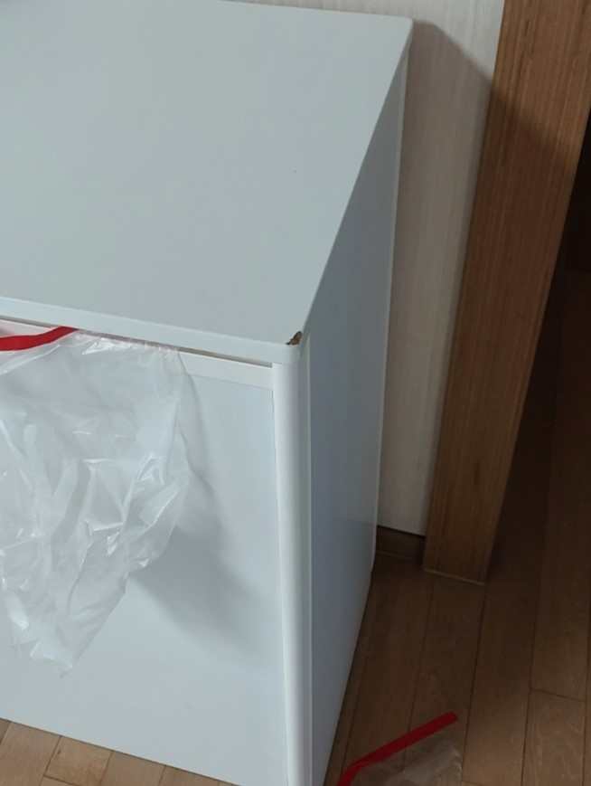
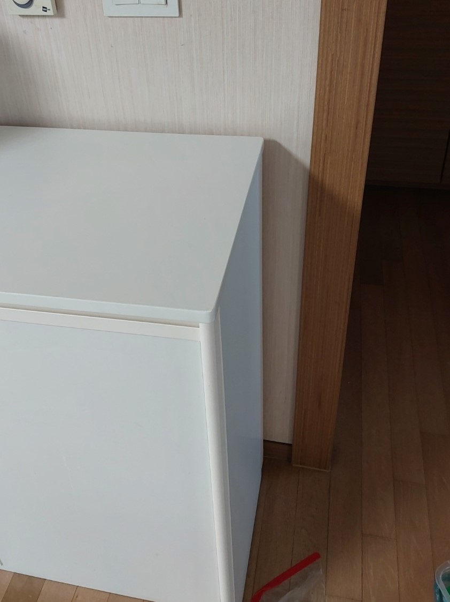

기존 가구 유지
사용 가능한 가구를 살리고 손상 부위만 보수합니다.
이사 과정에서 이삿짐 업체가 새 가구에 흠집을 낸 현장입니다. 이사업체에서 보상하기로 했고, 고객님은 손상된 가구의 복원을 의뢰하셨습니다. 사진에서 확인되는 흰색 가구 모서리의 찍힘을 중심으로 약 1시간 동안 작업했습니다.

밝은 가구는 작은 찍힘도 눈에 띄기 쉽습니다. 손상 부위의 형태와 표면 높이, 주변 색상과 광도를 함께 살펴 자연스럽게 이어지도록 보수합니다.
사용 가능한 가구를 살리고 손상 부위만 보수합니다.
찍힌 부분을 주변 형태와 높이에 맞춰 정리합니다.
기존 표면의 색상과 광도를 고려해 마무리합니다.
국소 손상은 가구 전체 교체의 부담을 줄일 수 있습니다.
가구 재질과 마감, 손상 깊이에 따라 세부 작업 방법을 정합니다.
주변을 보호하고 손상 범위와 마감 상태를 확인합니다.
약해진 부분을 정돈해 보수할 바탕을 준비합니다.
찍힌 모서리와 표면 높이를 주변에 맞춥니다.
기존 가구 표면을 기준으로 색상을 조절합니다.
광도와 경계를 확인하며 마무리합니다.
이사 중 손상된 가구를 부분복원했습니다. 이번 현장의 작업시간은 약 1시간입니다.

“새 가구에 흠집이 생겨서 너무 속상했는데, 감쪽같이 고쳐주셔서 감사해요^^ 이제 기분이 풀리네요~”
| 비교 항목 | 부분복원 | 가구 교체 |
|---|---|---|
| 비용 | 국소 손상은 비교적 부담이 적음 | 새 가구 구매와 배송 비용 발생 |
| 작업시간 | 손상 상태에 따라 비교적 짧음 | 제품 주문·배송 일정 필요 |
| 생활 불편 | 작업 범위가 작아 불편을 줄일 수 있음 | 기존 가구 반출과 새 가구 설치 필요 |
| 완성도 | 기존 색상과 형태에 맞춰 보수 | 새 제품으로 전체 변경 |
| 효과 | 찍힘과 흠집을 정리하며 기존 가구 유지 | 넓은 손상이나 사용상 문제를 함께 개선 |